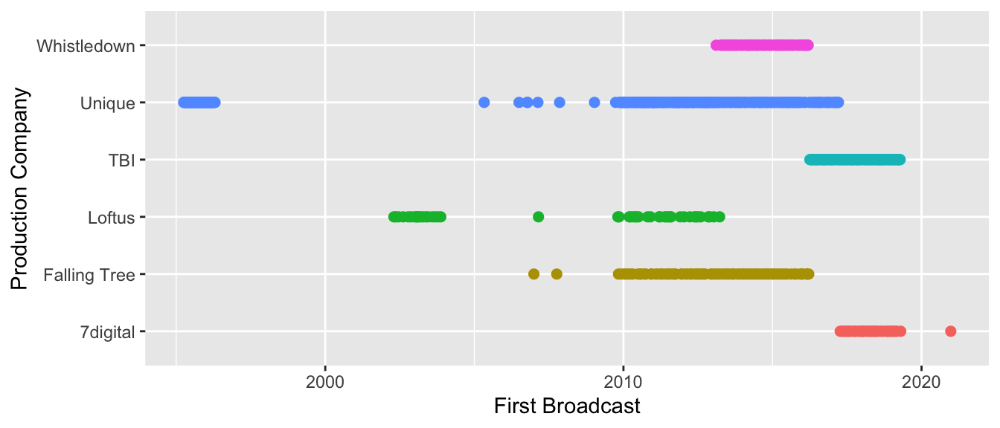

2 Production
After what appears to be a short pilot sequence, the series was originated by Unique, the Production Company (LOFTUS, 2007). It began with daily weekday broadcasts (BBC, n.d.) for the first six weeks before becoming a weekly broadcast in April 1995 with a new presenter, Mark Tully, in which “Through music, verse, prose and conversation, he probes questions he believes lie at the heart of our humanity.” (ibid., 2)
Unique productions was a division of UBC Media, in 2014 becoming 7digital in a merger (“UBC Media Group,” n.d.; UBC Media, 2014). Under these two production names, there are 294 episodes.
These graphics show the share of episodes and distribution over time of each of the production companies.

It is interesting to notice, in cataloguing the episodes, that readers of one episode sometimes become presenters of another (e.g. Adjoa Andoh in Changing the Mirror); presenters and producers appear as readers (e.g. John McAndrew and Frank Stirling in Translation) or composers (e.g. Michael Zev Gordon in Impermanence). There are a number of episodes on the BBC website that state the production company without naming a producer, although a producer is listed with the readers (e.g. Frank Stirling in the Unique production The Pearl of Great Price).
Occasional special editions of the programme deviate from the usual approach but follow the familiar format. For example, in A Language That Speaks The Truth, the words of broadcaster Studs Terkel speaking shortly before his death are connected with readings and music known to have been valued by him. In this example, two experienced producers, Eleanor McDowall & Alan Hall created the programme.